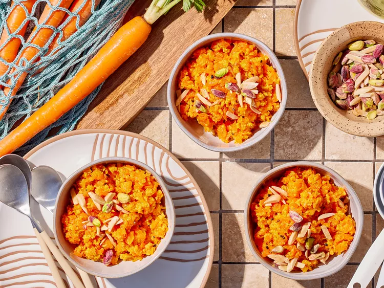

Carrot Halwa
Home

Description
Served warm, gajar ka halwa (carrot halwa) is a sweet pudding of simmered carrots, milk, sugar, and cardamom. There are several types of halwa in South Asia and this carrot halwa is especially popular during both Diwali and Eid
Ingredients
- 8 cups shredded carrots
- 8 cups whole milk
- 1 cup sugar
- 24 green cardamom pods or 1 teaspoon ground cardamom
- 6 tablespoons vegetable oil
- 1/4 cup slivered almonds, toasted
- 1/4 cup dry- roasted pistachio nuts